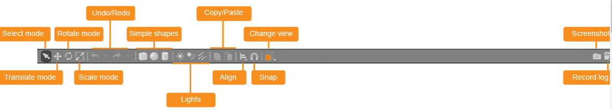
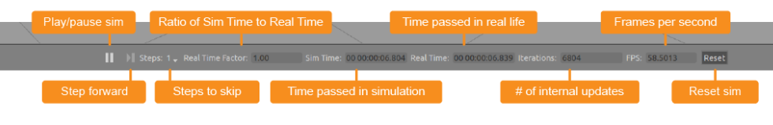
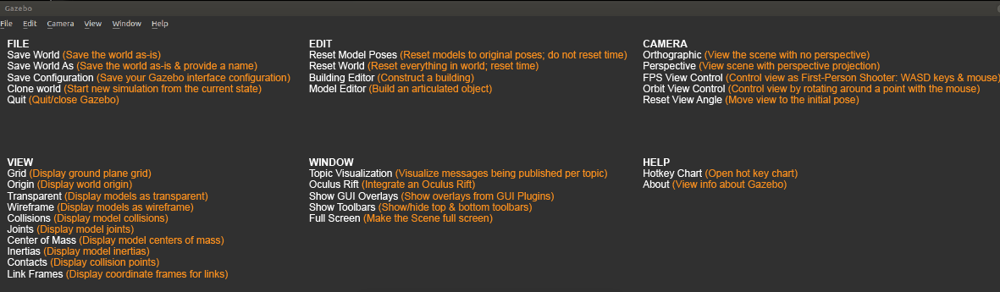
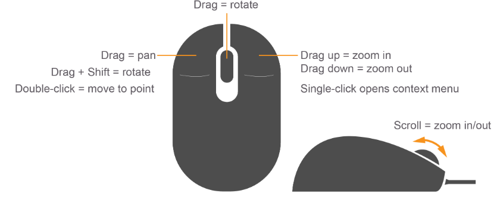
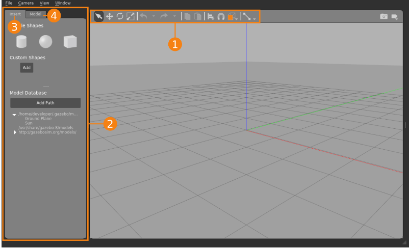
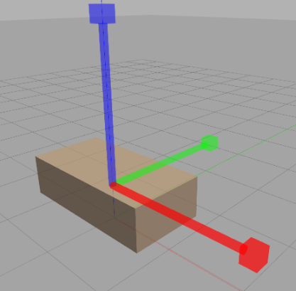

Это введение в графический интерфейс пользователя Gazebo, или GUI. Мы изучим основы интерфейса, например, что делают кнопки и как перемещаться по сцене.
Scene (Сцена) - это основная часть симулятора. Здесь моделируемые объекты анимируются, и вы взаимодействуете с окружающей средой.
Обе боковые панели — правую и левую — можно отобразить, скрыть или изменить их размер, перетащив полосу, отделяющую их от сцены.
Левая панель:
На панели есть три вкладки:
Правая панель (скрытая по умолчанию Правая панель по умолчанию скрыта. Щелкните и перетащите панель, чтобы открыть ее. Правую панель можно использовать для взаимодействия с подвижными частями выбранной модели (суставами). Если в сцене нет выбранных моделей, на панели не отображается никакой информации.
верхняя Toolbar
Главная панель инструментов включает в себя некоторые из наиболее часто используемых опций для взаимодействия с симулятором, такие как кнопки для выбора, перемещения, поворота и масштабирования объектов; создания простых форм (например, куба, сферы, цилиндра); и копирования / вставки. Продолжайте и поиграйте с каждой кнопкой, чтобы посмотреть, как она себя поведет.

Select mode - Навигация по сцене
Translate mode - Выберите модели, которые вы хотите переместить
Rotate mode - Выберите модели, которые вы хотите повернуть
Scale mode: Выберите модели, которые вы хотите масштабировать
Undo/Redo: Отмена/повтор действий в сцене
Simple shapes: Вставляйте простые фигуры в сцену
Lights: Добавьте света к сцене
Copy/paste: Копирование/вставка моделей в сцену
Align: Выравнивание моделей по отношению друг к другу
Snap: Привязка одной модели к другой
Change view: Рассматривайте сцену под разными углами
Нижняя Toolbar

На нижней панели инструментов отображаются данные о симуляции, такие как время симуляции и его связь с реальным временем. "Simulation time" означает, как быстро проходит время в симуляторе во время выполнения симуляции. Моделирование может быть медленнее или быстрее, чем в реальном времени, в зависимости от того, сколько вычислений требуется для выполнения моделирования.
"Real time" означает фактическое время, которое проходит в реальной жизни во время работы симулятора. Соотношение между временем моделирования и реальным временем известно как "real time factor (коэффициент реального времени)" (RTF). Это отношение времени моделирования к реальному времени. RTF - это показатель того, насколько быстро или медленно выполняется ваша симуляция по сравнению с реальным временем.
Состояние мира в Gazebo вычисляется один раз за итерацию. Вы можете увидеть количество итераций в правой части нижней панели инструментов. Каждая итерация ускоряет моделирование на фиксированное количество секунд, называемое размером шага. По умолчанию размер шага равен 1 мс. Вы можете нажать кнопку паузы, чтобы приостановить моделирование и выполнить несколько шагов за раз, используя кнопку шага.

ПРИМЕЧАНИЕ: Некоторые настольные компьютеры Linux скрывают меню приложений. Если вы не видите меню, переместите курсор в верхнюю часть окна приложения, и меню должно появиться.
Щелчок правой кнопкой мыши на моделях откроет контекстное меню с различными параметрами. Щелкните правой кнопкой мыши на модели, чтобы увидеть, что доступно.

Редактор моделей позволяет нам создавать простые модели прямо в графическом интерфейсе пользователя (GUI). Для более сложных моделей вам нужно научиться создавать SDF-файлы и ознакомиться с руководствами по созданию робота. Но на данный момент мы можем делать все прямо в графическом интерфейсе Gazebo!
Интерфейс редактора моделей похож на основной интерфейс Gazebo, но с некоторыми незначительными отличиями. Левая панель и верхняя панель инструментов теперь содержат только виджеты для редактирования и создания частей модели. Нижняя панель инструментов, на которой отображаются данные моделирования, скрыта, поскольку моделирование приостановлено.

Palette (Left Panel)
Palette состоит из двух вкладок.
Insert
На вкладке Insert вы можете добавлять новые детали (ссылки и модели) в редактор моделей. Здесь есть три раздела.
Model
Вкладка "Model" позволяет задать название и основные параметры создаваемой модели. На ней отображается список связей, стыков, вложенных моделей и плагинов, которые есть в модели. Параметры можно изменить с помощью Link Inspector. Его можно открыть любым из этих способов:
Доступными инструментами являются выделение, перевод, масштабирование, поворот, отмена и повтор, копирование и вставка, выравнивание, привязка, корректировка вида и совместное создание.
Сначала мы создадим шасси автомобиля. На вкладке "Вставка" на левой панели нажмите один раз на значок коробки, переместите курсор в любое место сцены и нажмите еще раз, чтобы освободить коробку.
Затем измените размер рамки, чтобы она больше напоминала форму шасси автомобиля. Мы можем сделать это, выбрав инструмент Масштабирование, расположенный на верхней панели инструментов. Выделите рамку в сцене, и над рамкой должен появиться маркер RGB-цвета. Красный маркер обозначает ось X, зеленый - Y, а синий - Z. Наведите курсор мыши на красный маркер, чтобы выделить его, затем щелкните и перетащите, чтобы удлинить корпус вдоль оси X. Увеличьте размер корпуса так, чтобы его длина составляла примерно 2 метра. Вы можете оценить это, взглянув на сетки размером 1х1 метр на земле.
Теперь выровняйте корпус с помощью инструмента Scale (Масштабирование). Щелкните и перетащите синий маркер вниз, чтобы корпус стал примерно вдвое меньше своего первоначального размера.

Мы хотим опустить шасси ближе к земле. Для получения точных результатов измерений мы воспользуемся инспектором ссылок. Дважды щелкните на поле, чтобы вызвать инспектора. Прокрутите страницу вниз до нижней части вкладки "Ссылки", чтобы найти параметры позы, и измените Z на 0,4 м, затем нажмите "За пределами поля" (не нажимайте "Ввод"). Нажмите "ОК", чтобы сохранить изменения и закрыть инспектор.
Передние колеса
Давайте перейдем к передним колесам. Для начала вставьте цилиндр на вкладке "Вставка" на левой панели.
Цилиндр в его ориентации по умолчанию будет вращаться не очень хорошо. Давайте повернем его вдоль оси X с помощью Link Inspector. Дважды щелкните по цилиндру, перейдите к разделу "Pose" внизу, измените угол наклона на 1,5707 радиана (90 градусов) и нажмите "Roll". Пока не закрывайте инспектор.
Затем измените размер колеса, указав его точные размеры. Перейдите на вкладку Визуальные элементы, чтобы просмотреть список визуальных элементов по этой ссылке. Их должен быть только один. Разверните визуальный элемент, нажав на маленькую стрелку рядом с текстовой надписью визуальные элементы. Прокрутите вниз до раздела Геометрия и измените радиус на 0,3 м, а длину - на 0,25 м.
Теперь вы должны увидеть цилиндр меньшего размера внутри цилиндра большего размера. Это ожидаемо, поскольку мы изменили только визуальную геометрию, но не столкновение. "Визуальное" - это графическое представление связи, которое не влияет на физическую симуляцию. С другой стороны, физический движок использует "столкновение" для проверки столкновений. Чтобы также обновить столкновение колеса, перейдите на вкладку Столкновение, разверните элемент единственное столкновение и введите те же геометрические размеры. Радиус: 0,3 м, длина: 0,25 м. Нажмите "ОК", чтобы сохранить изменения и закрыть инспектор.
Теперь, когда мы создали наше первое колесо, мы будем использовать его в качестве шаблона и создадим еще одно. Выберите колесо и нажмите на значок копирования на верхней панели инструментов.
Нажмите на значок Вставить и наведите курсор мыши обратно на сцену, чтобы вставить копию.
Давайте теперь убедимся, что автомобиль будет двигаться правильно, выровняв шасси по положительной оси X (красный маркер на рисунке). Когда вы будете добавлять колеса на следующем шаге, убедитесь, что они находятся в конце автомобиля, который проходит вдоль положительной оси X.
Шасси и колеса в настоящее время являются свободно перемещающимися элементами. Чтобы ограничить их движение, мы добавим соединения между каждым колесом и шасси. Нажмите на значок соединения на верхней панели инструментов, чтобы открыть диалоговое окно создания соединения.
Диалоговое окно создания соединения содержит свойства соединения, которые обычно задаются для соединения. Перед настройкой любого из свойств вам будет предложено выбрать родительскую и дочернюю связи соединения. Наведите курсор мыши на шасси в сцене, чтобы выделить его, и щелкните по нему, чтобы установить его в качестве родительского элемента соединения.
Наведите курсор мыши на левое переднее колесо; теперь линия должна проходить от начала шасси до конца курсора мыши. Щелкните по колесу, чтобы установить его в качестве дочернего элемента соединения. Будет создано новое соединение. По умолчанию это поворотное соединение (как указано в разделе Типы соединений в диалоговом окне), которое как раз и является тем типом соединения, который нам нужен.
Примечание: Возможно, в этот момент вам будет полезно изменить угол обзора. Это можно сделать на верхней панели инструментов; щелкните значок куба с оранжевой стороной.
Далее нам нужно настроить ось вращения колеса. В диалоговом окне "Создание соединения" найдите раздел "Ось соединения" и измените ось на Z (0, 0, 1). Обратите внимание на изображение соединения RGB на колесе. Вы должны увидеть, что теперь над синей стрелкой на изображении сустава появляется желтое кольцо, указывающее на то, что это ось вращения.
Чтобы выровнять колесо рядом с шасси, мы воспользуемся различными вариантами выравнивания в разделе "Выровнять соединения" в диалоговом окне "Создание соединения". Сначала мы выровняем колесо по оси X, поэтому нажмите на параметр "Максимально выровнять по оси X", чтобы увидеть результат выравнивания. Цилиндр должен быть подсвечен, чтобы показать, что его положение изменилось.
В нашем примере мы хотим расположить колесо вплотную к шасси. Чтобы приблизить колесо, выберите параметр Y Align Max. Однако это пока не совсем то, что мы хотим. Выберите параметр "Реверс" рядом с параметрами выравнивания по оси Y, чтобы выровнять минимальное значение колеса (обратное максимальному) по отношению к максимальному значению шасси. Обратите внимание, что параметр "Реверс" применяется к дочернему звену, поскольку конфигурация выравнивания по умолчанию, показанная в раскрывающемся списке ниже, является дочерней по отношению к родительской. Если задана конфигурация "От родительского к дочернему", к родительской ссылке будет применен обратный параметр. Нажмите "Create".
Чтобы расположить колесо над землей, откройте инспектор ссылок, дважды щелкнув по колесу. Мы можем использовать раздел "Положение" в нижней части диалогового окна для перемещения колеса. Учитывая, что радиус колеса составляет 0,3 м, измените положение Z на 0,3 м, чтобы оно стояло на земле, и нажмите Ok.
Повторите процесс создания шарнира и настройку оси для другого переднего колеса, убедитесь, что а) шасси является родительским для шарнира, а колесо - дочерним, б) ось вращения установлена на Z и в) используйте опцию Y Align Min для выравнивания правого колеса следующим образом. он находится с другой стороны корпуса.
Измените размер сферы, задав ей точные размеры, как это было сделано для передних колес. Перейдите на вкладку Визуальные элементы, чтобы просмотреть список визуальных элементов по этой ссылке, разверните единственный визуальный элемент, прокрутите вниз до раздела Геометрия и измените радиус на 0,2 м. Не забудьте также проделать то же самое с коллизией на вкладке Коллизия.
Чтобы создать соединение между поворотным колесом и корпусом, откройте диалоговое окно создания соединения, щелкнув по значку соединения на верхней панели инструментов. Наведите курсор мыши на сцену и выберите шасси в качестве родительской ссылки, а сферу - в качестве дочерней ссылки.
В отличие от шарниров передних колес, поворотное колесо вращается во всех направлениях и не имеет определенной оси вращения. В Gazebo это моделируется с помощью шарового шарнира. Итак, в разделе Joint выберите опцию Ball. Вы должны увидеть, как изображение соединения в сцене меняет цвет, указывая на то, что был установлен другой тип соединения.
Затем выровняйте роликовое колесо так, чтобы оно находилось по центру корпуса и располагалось с задней стороны. В разделе Выравнивание звеньев выберите параметр "Выровнять по центру", чтобы выровнять два звена по оси Y, и выберите параметр "Минимальное выравнивание по оси X", чтобы переместить поворотное колесо так, чтобы оно располагалось прямо в задней части автомобиля. Нажмите кнопку "Создать", чтобы завершить процесс создания соединения.
Наконец, установите роликовое колесо так, чтобы оно находилось прямо над землей. Для этого откройте Link Inspector и установите положение Z на 0,2 м.
Перейдите в Палитру (левая панель) и выберите вкладку Вставка, чтобы просмотреть список моделей, доступных в разделе База данных моделей.
Модели в списках упорядочены по пути, по которому они расположены. Как вы можете видеть, первый список содержит модели, доступные на вашем локальном компьютере, как указано в пути в заголовке. Если вы первый пользователь, вы можете увидеть в списках не так много моделей. Другие модели будут отображаться по мере их загрузки из онлайн-базы данных моделей. Найдите список с указанием пути http://gazebosim.org/models/ и разверните его, чтобы просмотреть модели, доступные из онлайн-базы данных моделей.
Модели расположены в алфавитном порядке. Найдите в списке камеру глубины и нажмите на нее, чтобы начать загрузку модели. Это может занять несколько секунд в зависимости от подключения к сети.
Как только загрузка будет завершена, вы увидите, что в кадре появится модель камеры глубины. Она выглядит как маленький куб. Наведите курсор мыши на кадр и щелкните на пустом месте перед автомобилем, чтобы вставить камеру глубины.
Выберите инструмент "Перевести" на верхней панели инструментов и переместите камеру глубины так, чтобы она располагалась на верхней части шасси в передней части автомобиля и примерно по центру оси Y.
Затем закрепите камеру глубины на корпусе. Нажмите на значок соединения на верхней панели инструментов, чтобы открыть диалоговое окно создания соединения. Наведите курсор мыши на сцену и выберите корпус в качестве родительской ссылки, а камеру глубины - в качестве дочерней ссылки.
В диалоговом окне "Создание соединения" в разделе "Типы соединений" выберите опцию "Фиксированное соединение" и нажмите "Создать", чтобы завершить создание соединения.
Перейдите на левую панель и выберите вкладку Модель, чтобы просмотреть детали, из которых состоит собранная вами модель автомобиля.
В разделе "Плагины модели" вы должны увидеть кнопку "Добавить". Нажмите на нее, чтобы открыть инспектор плагинов модели, который позволяет добавить новый плагин в модель.
Сначала дайте плагину название. В поле Название плагина введите follower. Название плагина должно быть уникальным в рамках данной модели.
Плагин, который мы собираемся использовать, называется libFollowerPlugin.so поэтому введите это в поле Имя файла. Имя файла соответствует фактическому имени библиотеки плагинов, хранящейся на вашем локальном компьютере. Он существует в виде динамически подключаемой библиотеки общих объектов, отсюда и соглашение об именовании и расширение .so (в Linux). Не беспокойтесь, если вы используете Gazebo в других операционных системах, поскольку расширение будет автоматически заменено на правильное.
Плагин follower не требует никаких дополнительных параметров, поэтому вы можете оставить поле Innerxml пустым. Примечание: Это простой плагин для демонстрационных целей. Плагины обычно связаны с различными параметрами, например, для плагина дифференциального привода требуется указать название шарниров, управляющих левым и правым колесами, чтобы он мог перемещать транспортное средство в правильном направлении. В случае плагина follower он делает множество предположений о типе модели, к которой он подключен, и пытается автоматически найти соединения и датчик.
Нажмите "ОК", чтобы добавить плагин. Теперь плагин должен появиться в разделе "Плагины модели" на левой панели.
Выйдите из редактора моделей, перейдя в "Файл" и выбрав "Exit Model Editor". Теперь Gazebo должна вернуться в обычный режим моделирования. Нажмите кнопку воспроизведения, чтобы запустить моделирование.
Чтобы проверить, работает ли плагин, поставьте box перед автомобилем и посмотрите, как автомобиль медленно приближается к нему.
Если позже вы захотите еще раз отредактировать модель, просто щелкните по ней правой кнопкой мыши и выберите в контекстном меню пункт Edit Model.